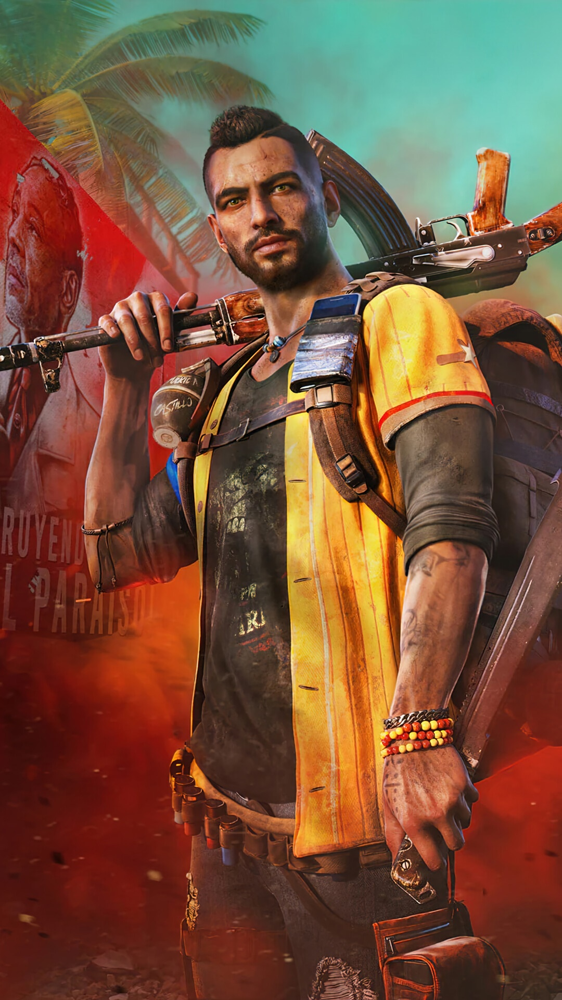

Personagens

Antón Castillo
O ditador de Yara, interpretado por Giancarlo Esposito. Ele governa com mão de ferro e quer moldar o futuro da ilha ao seu modo.

Dani Rojas
O protagonista jogável. Pode ser homem ou mulher, e lidera a revolução contra o regime de Castillo.
Chorizo
O adorado cão salsicha da resistência. Ajuda o jogador distraindo inimigos e trazendo alegria ao campo de batalha.